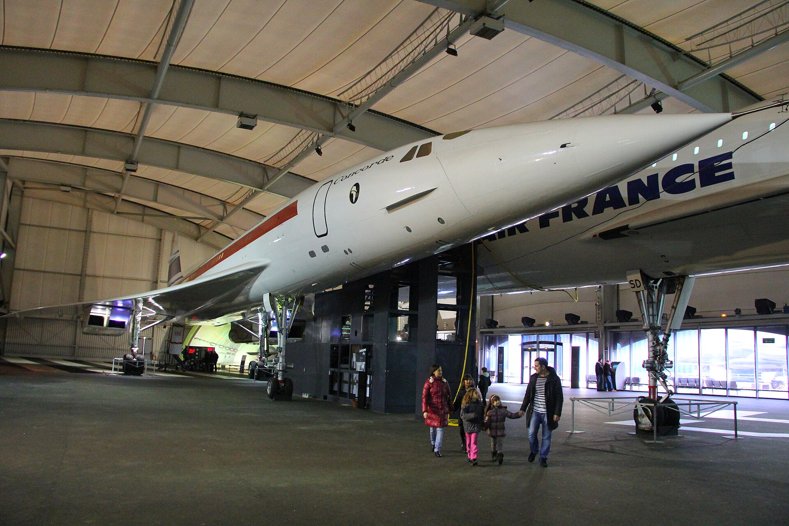
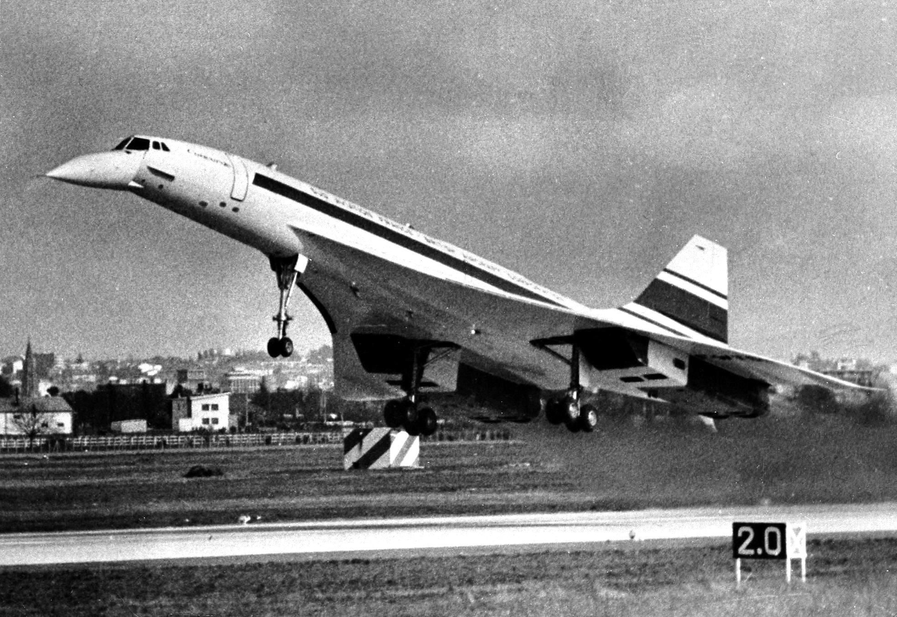
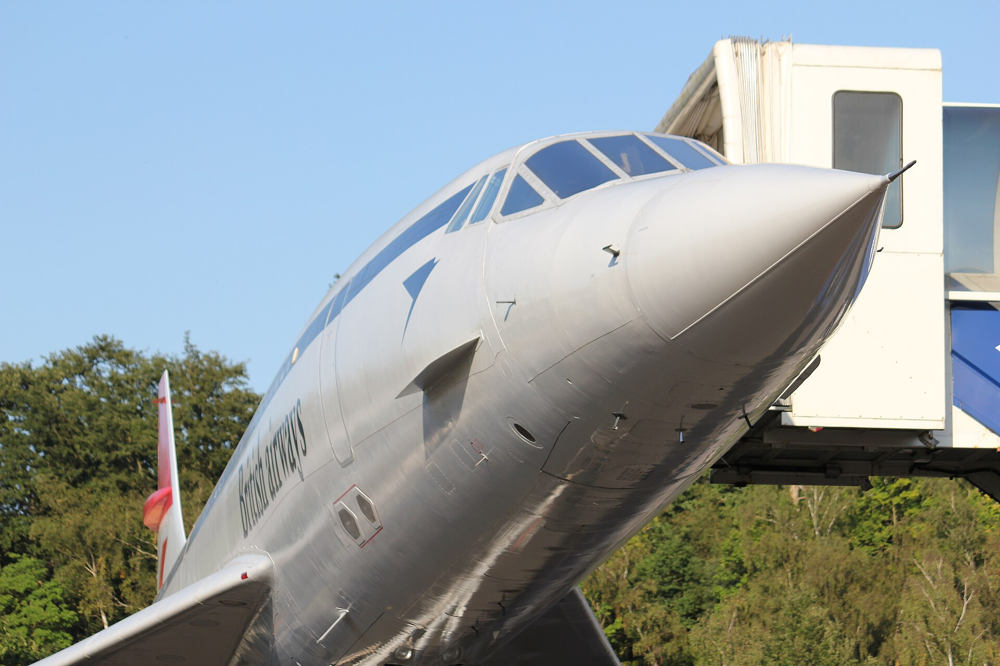
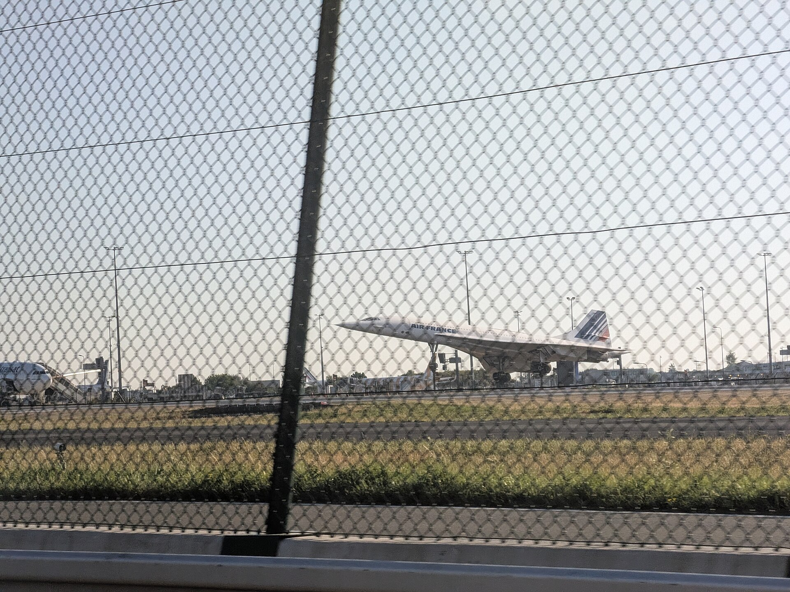
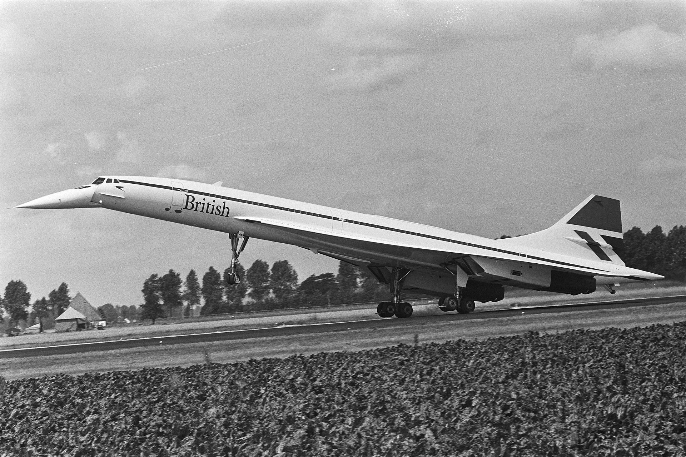
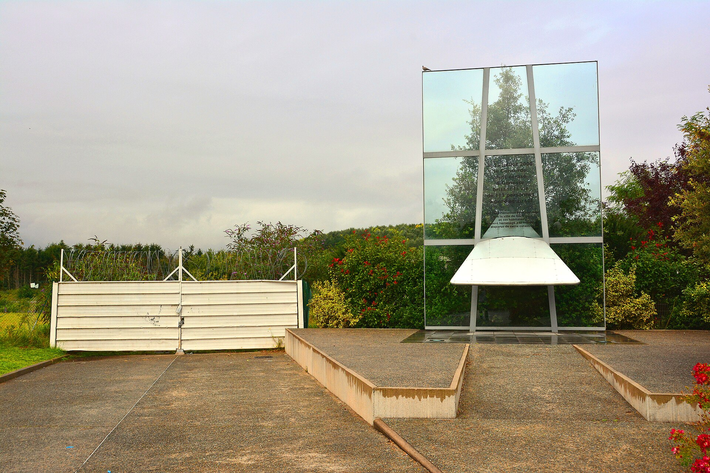
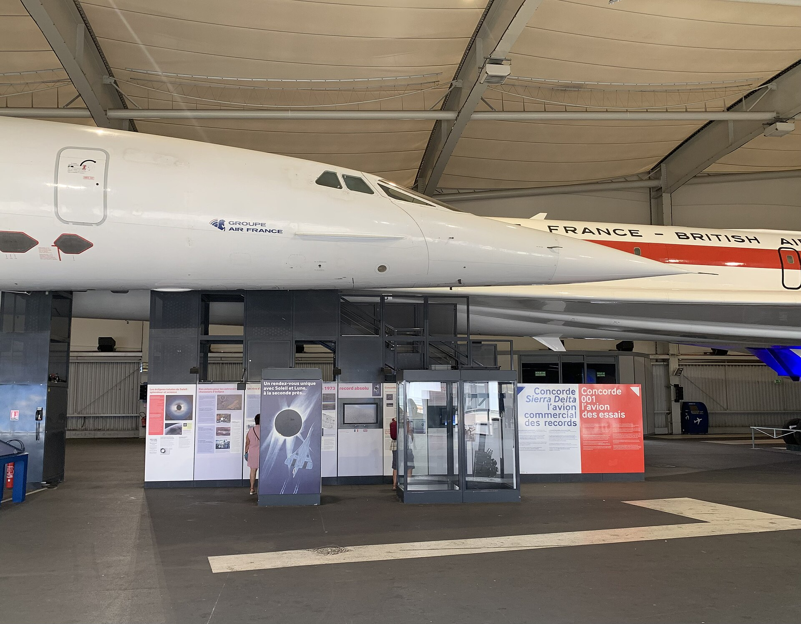
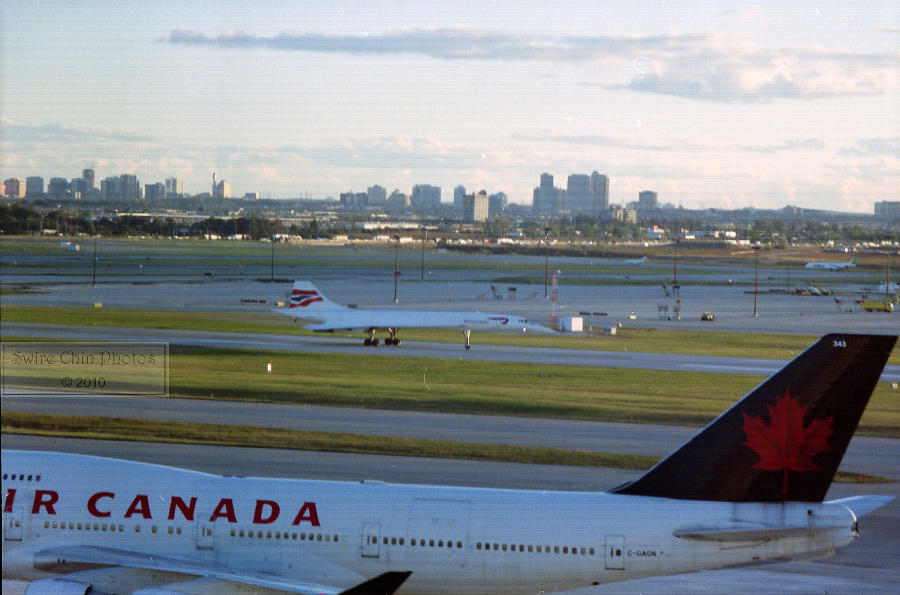
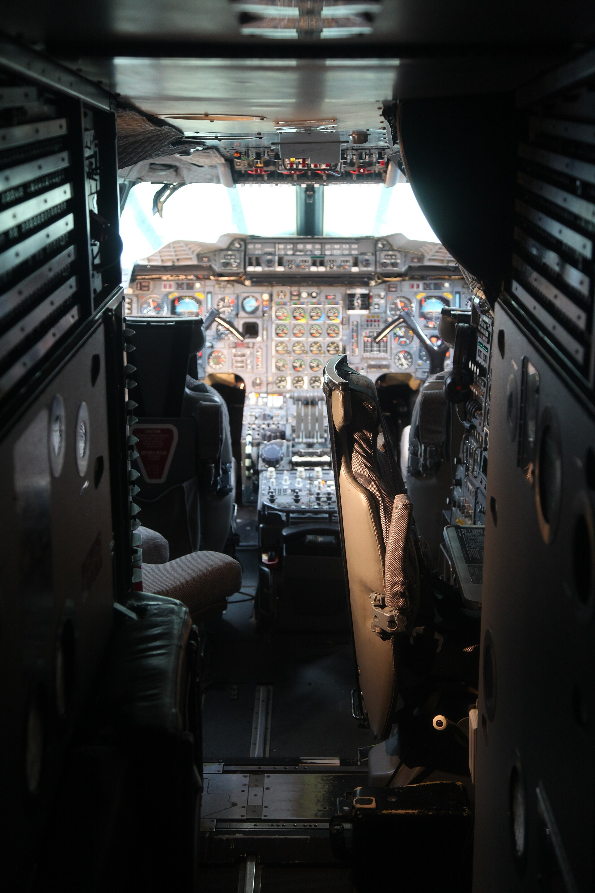

The life of an aircraft
Born of a treaty, retired to a museum — the story of Concorde.
Two governments, one gamble
On 29 November 1962, Britain and France signed a treaty to build a supersonic airliner together. Sharing the enormous cost and risk, they bet that the future of flight was faster, not just bigger — a bet no single company would have made alone.
Rolled into the light
On 11 December 1967 the first Concorde, prototype 001, was rolled out at Toulouse. Long, white and impossibly sharp-nosed, it looked like nothing else — a shape drawn by the physics of flying at twice the speed of sound.

She flies
On 2 March 1969 André Turcat lifted 001 off the Toulouse runway for a careful 27-minute first flight. After years of drawings and doubt, Concorde was finally a real aircraft.

Through the barrier
Seven months later, on 1 October 1969, 001 pushed past the speed of sound for the first time. The following year it reached Mach 2 — the cruising speed it would keep for the rest of its life.

Open for business
On 21 January 1976 British Airways and Air France began the world's first scheduled supersonic passenger services on the same day. An ordinary ticket now bought a seat above the weather, at twice the speed of sound.

Twenty-seven years above Mach 2
For a generation, Concorde carried presidents, pop stars and business travellers across the Atlantic in under three and a half hours. In 1996 one crossed from New York to London in 2h 52m 59s — a record that still stands. It was never cheap, and never quite profitable, but it was the fastest way for anyone to fly.

A day that changed everything
On 25 July 2000 Air France Flight 4590 crashed shortly after take-off from Paris, killing all 109 people on board and four on the ground. It was Concorde's only fatal accident. The whole fleet was grounded while the cause — debris on the runway that ruptured a fuel tank — was found and fixed.

Back in the air
After more than a year of modifications — tougher tyres, protected fuel tanks, reinforced wiring — Concorde returned to service in November 2001. But the world had changed, and passenger numbers never fully recovered.

The last landing
On 24 October 2003 British Airways flew Concorde's final commercial service, and three aircraft landed at Heathrow together before huge crowds. After 27 years, the age of supersonic airline travel was over.

Nothing has replaced it
Two decades on, no airliner has flown passengers faster. Concorde remains the proof that supersonic travel is possible — and the standard any successor still has to beat.
